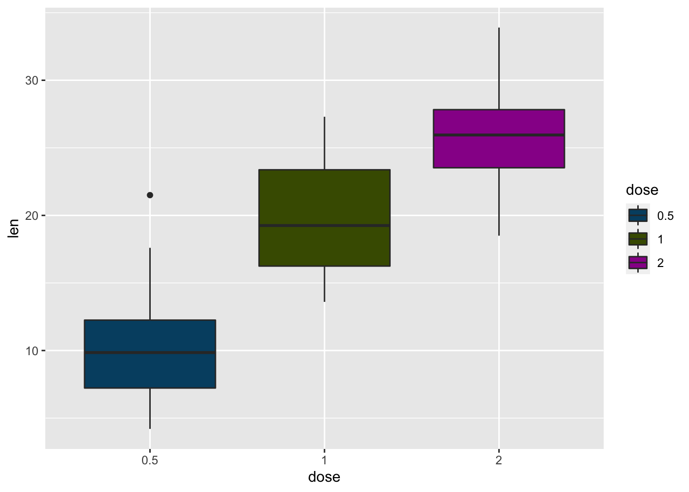

ColorBrewer and ggthemes
Introduction
Goal: by the end of this lab, you will be able to use colorbrewer and ggthemes to customize the look of your visualization.
Setting up
For this lab, we’re going to be using the ToothGrowth dataset, which is one of the example datasets included in R. It contains data on how fast guinea pigs’ teeth grow if you give them vitamin C supplements in various forms and at various doses. You can learn more about this dataset by typing ?ToothGrowth at the console.

Let’s take a look:
## len supp dose
## 1 4.2 VC 0.5
## 2 11.5 VC 0.5
## 3 7.3 VC 0.5
## 4 5.8 VC 0.5
## 5 6.4 VC 0.5
## 6 10.0 VC 0.5## len supp dose
## Min. : 4.20 OJ:30 0.5:20
## 1st Qu.:13.07 VC:30 1 :20
## Median :19.25 2 :20
## Mean :18.81
## 3rd Qu.:25.27
## Max. :33.90Hmm… the dose column looks a little funny. There are only three doseage values [0.5,1,2], but R is interpreting them as continuous. We can tell R that we want to convert them to categories (a.k.a. factors) using dplyr like this:
Now let’s look again:
## len supp dose
## Min. : 4.20 OJ:30 0.5:20
## 1st Qu.:13.07 VC:30 1 :20
## Median :19.25 2 :20
## Mean :18.81
## 3rd Qu.:25.27
## Max. :33.90Much better! Now let’s draw a graph.
Drawing a ggplot
Remember the basic recipe for building a plot with ggplot2? Don’t forget to load the library!
- Make a boxplot of the
ToothGrowthdata, withx = dose,y = len, andfill = dose.
Store it in a variable calledmyPlot.
Changing colors manually
The default colors R selects are okay, but maybe we can do better. Let’s try using colors from the Smith College official Color Palette. We can specify the color values we want using scale_fill_manual() like this:

Changing colors with RColorBrewer
That looks pretty nice, but we could spend an awful lot of time making tiny tweaks to color palettes. Luckily Cynthia Brewer over at ColorBrewer has come up with some really good ones we can borrow! Let’s load the RColorBrewer library and check it out. Note: you might need to install.packages('RColorBrewer') if you’re running R on your laptop.
Ooh, so many choices! We can now use these palettes along with scale_fill_brewer() to make perceptually-optimized plots:
That looks a little bit… Valentine-y?

- Try out a few other color palettes!
Stylizing using ggthemes
If we want even more control, we can use the ggthemes package to define not only the color palette, but the overall style of the plot as well. For example, if we want the minic the style used by the graphic design team at The Economist, we could say:
Notice how the background changed colors, the axes were re-styled, and the legend changed positions? You can read more about available ggthemes and scales here.
Putting it all together
Now it’s time to get creative! There are many more datasets available in R. Let’s take a look at what we’ve got to play with:
You can learn more about any of the datasets by running ?<dataset> at the console (replacing <dataset> with the name of the dataset).
- Use
ggplotto draw a plot of any dataset you like, and style it.
Try combining both a theme and a color palette.